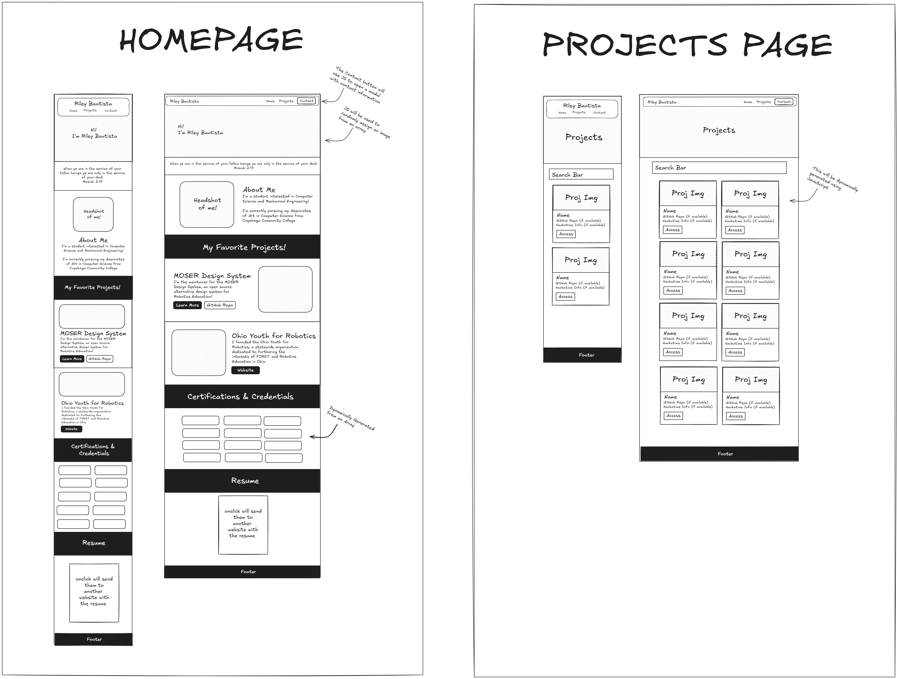

Overview
Purpose
This website will be a portfolio of my previous work/projects, and as a way to express myself on the internet. It will be the third iteration of my personal website available on rbautista.net! (My home server is down indefinitely, so it'll be hosted on GitHub Pages)
Audience
Anyone interested in learning more about me, my projects, and organizations i'm apart of.
Dynamic elements
- Contact Me button will display a modal containing Contact Information
- The image on both the home page and about page will be a randomly chosen image from an array, with exception for certain dates of meaning to me, wherewhich conditional branching will be used to show a specified image
- Certifications and credentials on the homepage will be dynamically generated from a JSON file using JavaScript
- The projects on the project page will also be dynamically generated from a JSON file using JavaScript
- Search bar on the projects page to show specified projects, allowing for easier mobile use
Branding
Website Logo
Style Guide
Color Palette
Palette URL: https://coolors.co/253e67-fffcf0-d99b26-1a191f| Primary | Secondary | Accent 1 | Accent 2 |
|---|---|---|---|
| [#253E67] | [#FFFCF0] | [#D99B26] | [#1A191F] |
Pseudocode for your project
-
Contact Modal:
- Select the "Contact Me" button, the modal container, and the modal close button from the DOM.
- Add a click event listener to the "Contact Me" button that removes the "hidden" class (or sets display to visible) on the modal.
- Add click event listeners to the close button and outside modal backdrop to add the "hidden" class back and close the modal.
-
Dynamic Background Image
- Create an array of general image objects (each containing an image file path and alt text).
- Get the current month and day using the JavaScript Date object.
- Use conditional branching (if / else if / else) to check if today matches a special date (e.g., birthday or robotics competition milestone):
- If it matches, set the hero image src and alt attributes to the specific milestone image.
- Else, generate a random index using Math.floor(Math.random() * array.length) and display that random image from the array.
-
Dynamic Certifications & Credentials (Home Page):
- Fetch data from JSON File
- Select the credentials container element on the home page.
- Loop through the credentials array using .forEach():
- Create HTML card elements populated with each credential's properties.
- Append the generated HTML into the container.
-
Dynamic Projects Rendering (Projects Page):
- Fetch data from projects.json containing project objects (title, image, live URL, and GitHub link).
- Create a renderProjects(projectList) function that clears the project grid container and loops through the passed array to build and insert project cards into the DOM.
- Call renderProjects(allProjects) on initial page load to display every project.
-
Project Search Bar Filter:
- Select the search input element and attach an "input" event listener.
- On user input, capture the search term and convert it to lowercase.
- Use .filter() on the projects array to return only projects whose title, description, or tech tags include the search term.
- Pass the filtered array into renderProjects() to update the displayed cards in real time.
Wireframes
